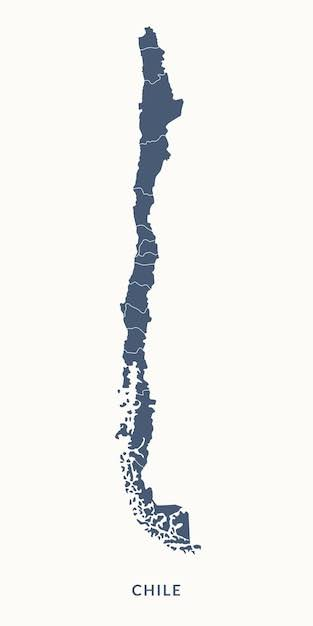

Disponibilidad mensual
100,0%
Mínimo contractual: 95%
Performance Ratio (PR)
N/A
Limitaciones del parque
PARQUES

Santa Inés · Enero 2026
GENERACIÓN
1.919 MWh
-20,2% vs. estimado
INSOLACIÓN
265,7 kWh/m²
-20,3% vs. estimado
ALERTAS DEL MES
MANTENIMIENTO
EBCOInteligente
● Control operacional
Santa Inés · Enero 2026
CONSULTAS RÁPIDAS